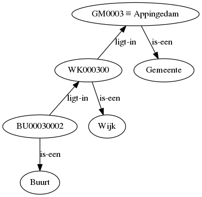

Maak geo-info developervriendelijk


Wouter Beek (wouter@triply.cc)
2016-09-06
Wat is Triply?
lodlaundromat.org


Semantic Search Engine

lodsearch.org

Onderzoeksvraag
Neem de ‘lessons learned’ van GeoNovum. Hoeveel kennis & kunde heeft een organizatie nodig om deze te implementeren?
№.1 Data conversie & transformatie

XML, CSV, Shapefile, JSON, … → Linked Data
Code-taal ‘BU00030002’ → kennisgraaf
 .{kind=link}
№.2 Data integratie
Meerdere kennisgrafen → één geïntegreerde kennisgraaf
- “Appingedam” in tekst op web site
- “GM0003” in CBS data
-
http://wikidata.org/entity/Q320014in Wikidata
№.3 Graaf + Geo
Voorbeeld vraag
“De 25 dichtstbijzijnde monumentale gebouwen uit de 19de eeuw.”
Wat zijn de opties?
- GeoSPARQL in triple store
- Solr/Lucene + triple store
- SotA GIS libraries
GeoSPARQL in triple store
- Antwoord tijd >5 sec.
- Ingeschatte antwoord tijd: >300 sec.
- Geeft alle resultaten in 1 keer terug
- Geïntegreerd met graaf queries
- Geen Open Source implementaties
- Zelfs closed source implementaties zijn zeer onvolledig
Solr/Lucene
- Antwoord tijd ~10 ms
- Geeft resultaten incrementeel terug
- Open Source
- Niet geïntegreerd met met graaf queries
SotA GIS libraries
- Antwoord tijd ~6 ms
- Ondersteuning voor alle veelvoorkomende geo-queries (intersectie, proximiteit, bevat).
- Geeft resultaten incrementeel terug
- Geïntegreerd met graaf queries
Andere ‘lessons learned’
- Verschillende formaten
- Vindbaarheid middels zoekmachines
- Eenvoud
- Verschillende gebruikers groepen
(Nog) niet aan toe gekomen
- Demonstrator → productie systeem
- Persistente IRIs
Conclusie
Niet eenvoudig om Linked Geodata te publiceren!
Volg de GeoNovum ‘lessons learned’. Deze geven richting aan het proces.
http://www.geonovum.nl